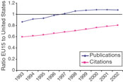
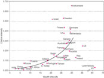
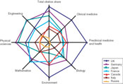
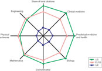
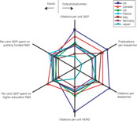
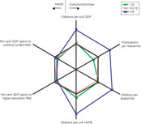

The ability to judge a nation's scientific standing is vital for the governments, businesses and trusts that must decide scientific priorities and funding. In this paper I analyse the output and outcomes from research investment over the past decade, to measure the quality of research on national scales and to set it in an international context. There are many ways to evaluate the quality of scientific research, but few have proved satisfactory. My analysis updates and extends the groundbreaking work by May1, which covered 1981–94, and draws on a study of 1993–2002 commissioned by the UK Office of Science and Technology (OST)2. Although the OST study's admittedly parochial objective is to evaluate the United Kingdom's performance in science and engineering research, this paper should be of more widespread interest as it provides metrics for judging achievement, and analyses of the output and outcomes of other countries.
To measure the quantity and quality of science in different nations, I have analysed the numbers of published research papers and reviews, and their citations. All data were provided by Thomson ISI, previously known as the Institute for Scientific Information, which indexes more than 8,000 journals in 36 languages, representing most significant material in science and engineering.
One potential problem with this type of bibliometric analysis is that individual papers can skew the results. For instance, a paper may be highly cited because it has been discredited, or because its authors over-cite their own work. However, the large number of papers in this study should smooth out such distortions. The heads of large research institutions may also be authors on papers to which their contribution was largely indirect. However, my analysis considers only authors' country of origin, that is where they are working, rather than individual names. Finally, citation analyses must not be used to compare different disciplines. For example, papers in medical research get many more citations than those in mathematics. An aggregate of citations across disciplines will therefore lead to high-citation disciplines swamping the low, an issue I will consider later.
I made comparisons across 31 countries (the comparator group) including the G8 group (italicized) and the 15 countries of the European Union before the 2004 accession (EU15). The countries are: Australia, Austria, Belgium, Brazil, Canada, China, Denmark, Finland, France, Germany, Greece, India, Iran, Ireland, Israel, Italy, Japan, Luxembourg, the Netherlands, Poland, Portugal, Russia, Singapore, Spain, South Africa, South Korea, Sweden, Switzerland, Taiwan, the United Kingdom and the United States. This group accounted for more than 98% of the world's highly cited papers, defined by Thomson ISI as the most cited 1% by field and year of publication. The world's remaining 162 countries contributed less than 2% in total.
The premier league
Table 1 shows the total publications and the citation analyses for the comparator group, covering all fields of science and engineering. Each cited paper is allocated once to every country in which an author is based, so some papers are counted twice or more. The sum of national publications exceeds the world total because of international collaboration. National shares similarly sum to more than 100%. The totals for grouped publications (EU15, world) are adjusted to take this into account, by removing duplicate papers with multiple national authorship, giving an accurate net total.
![Table 1 - Rank order of nations based on share of top 1|[percnt]| of highly cited publications, 1997|[ndash]|2001](table_thumb.gif)
The rank order in Table 1 is only marginally affected by the variable selected and is similar to that for 1981–94 (ref. 1). It is not particularly sensitive to which of the two citation analyses are used. The percentage share of world citations (citations share index) is the national share of citations in all disciplines, and so gives more weighting to the more heavily cited disciplines, such as medicine.The United States easily heads the list of nations in the volume of publications and citations and the share of top 1% cited papers, although the EU15 countries now publish more papers than the United States (Fig. 1) and are not far behind on citations. The United Kingdom is second on the two citations listings, but Japan publishes almost as many papers and Germany is closing the gap in citations.
Figure 1: Comparing Europe with the United States.
Ratio of the publications and citations of the 15 European Union countries in the comparator group (EU15) to the United States on ISI databases in 1993–2002. The EU15 total contains some duplication because of papers jointly authored between countries in the EU group. Counts for papers and citations are totals for country (or group) for the stated year.
High resolution image and legend (31K)The United States' share of citations dropped by about 3% between 1993 and 2002, whereas the United Kingdom's and Germany's have each increased. The corrected UK share was 10.87% in 1993–97, 11.39% in 1997–2001 and 11.6% in 2001. The nations with the most citations are pulling away from the rest of the world. The G8 countries are in this premier division, apart from Russia, which has seen a radical drop in science investment since the break-up of the Soviet Union. The smaller northern European countries are snapping at the top seven's heels, and would be in this premier division if combined.
Although national contribution to world science is clearly an important indicator, it is also useful to compare outputs and outcomes relative to population and gross domestic product (GDP). Figure 2 compares 'wealth intensity', or GDP per person, with 'citation intensity' — citations per unit GDP. The smaller nations in the group — the Scandinavian countries, Israel, the Netherlands and Switzerland — all perform strongly by this measure, with the latter in a significant lead. The nations with a wealth intensity between US$20,600 (Spain) and US$35,800 (the United States) per person cover a nearly tenfold spread in citation intensity, with little correlation in this range. Among the outliers from the G8 are the United States and Japan, both below the average citation intensity for the full comparator group, and the United Kingdom, which is above average. At the other end of the scale, although the GDPs of China and India place them, respectively, second and fourth in the world, each has a low wealth and citation intensity.
Figure 2: Comparing economic and scientific wealth.
National science citation intensity, measured as the ratio of the citations to all papers to the national GDP, shown as a function of the national wealth intensity, or GDP per person, for the 31 nations in the comparator group. GDP and wealth intensity are given in thousands of US dollars at 1995 purchasing-power parity. Sources: Thomson ISI, OECD and the World Bank.
High resolution image and legend (40K)The number of citations per paper is a useful measure of the impact of a nation's output. The data can be re-based, to avoid distortions due to different citation rates in different disciplines, by normalizing to the average for each field and accounting for year of publication. The figure obtained is the re-based impact (RBI). Table 2 shows the average RBI over all disciplines among the 31 nations for 1993–2002, and also, to demonstrate the trend, the figure for 2002. Of the G8 nations, the United States heads this table, but once again the gap between the United States, the United Kingdom and Germany has narrowed significantly over the study period. As the US RBI shows a small increase over this period, its drop in citation share (Table 1) is due to a smaller number of published papers, with a higher average quality.
It is unlikely that these results reflect an anglophone bias, as it is now accepted that all high-quality papers are published in English. But anecdotal evidence suggests that preferential US citing of US papers may distort the analyses, given the sheer size of the US contribution. It is possible that Japan and Russia, being more scientifically isolated than the other major players, suffer particularly in this respect.
Dividing disciplines
Governments also need an indication of disciplinary strengths and weaknesses based on international comparisons. Comparing one discipline across different countries should be easier than comparing two disciplines within one country.
There is a variety of ways to categorize disciplines. The Organisation for Economic Co-operation and Development (OECD) database uses five broad groups: medical sciences; natural sciences; agricultural sciences; engineering and technology; and social sciences. In the United Kingdom, the assessment performed to determine public research funding is based on 68 disciplinary units. A bibliometric analysis3 of seven countries by Adams, including England but not the United Kingdom, based on these units for 1988–96 grouped the 68 units into blocks. Finally, the OST's grant from the UK treasury is divided mainly among seven research councils, each run at arm's length from government.
Taking all of these maps into account, and also noting similarities of journal usage by UK researchers from within the 68 disciplinary units, our contractors based their analysis2 on seven categories: clinical medicine; preclinical medicine and health; biological sciences; environment; mathematics; physical sciences; and engineering.
This national and disciplinary disaggregation process produces a substantial database2, but it can be presented in a compressed form using footprint plots (also known as spider or radial plots). The citation share for each category gives a measure of research impact. The aggregated citation share for each nation is shown for comparison. The larger the national footprint, the bigger the impact on international science. The footprints for the G8 countries excluding the United States are shown in Figure 3. The US citation share is about treble that of the United Kingdom, and is therefore compared separately on a different scale (Fig. 4), with the sum of the disciplinary footprints of the EU15 and the United Kingdom.
Figure 3: National strengths in different disciplines.
Plot shows research footprints for the G8 nations excluding the United States, based on the national share of citations in each of seven disciplines and overall percentage share of citations. The distance from the origin to the data point is proportional to citation share. The medical and life sciences are shown to the right, mathematics and physical sciences to the left.
High resolution image and legend (49K)Figure 4: Disciplinary strengths in the United States, the 15 European Union nations in the comparator group (EU15), and the United Kingdom.
The distance from the origin to the data point is proportional to citation share.
High resolution image and legend (35K)Figure 3 reveals some marked asymmetries. Russia is relatively strong in the physical sciences and engineering, and weak in the life sciences; Japan shows strengths in the physical sciences and engineering; France is strong in mathematics; Germany has the highest impact in the physical sciences; and the United Kingdom has the highest impact in this group in the medical, life and environmental sciences and is highly placed in mathematics, but does not show as strongly in the physical sciences and engineering. The comparison of the United States and the EU15 (Fig. 4) shows that the United States still has a bigger disciplinary footprint than the EU15, largely owing to its strength in the life sciences. The EU15 footprint is more symmetrical, being a little stronger than the United States in the physical sciences and engineering, but weaker in life and medical sciences.
Bang for the buck
May's 1997 analysis1 included an evaluation of scientific output relative to government money spent on research and development (R&D), excluding defence; this analysis particularly gave rise to comment and discussion4, 5, 6.
The following categories are the key factors in this analysis: higher education R&D, the output of which is people with research degrees and publications; government R&D, which generally gets more government money than higher education; publicly funded R&D, the sum of government and higher education; business funding of higher education R&D; and the gross domestic expenditure on R&D.
It is important to recognize that there are lags between changes in research funding and outputs (publications), and between outputs and their impact, and that multivariate models may be necessary to understand productivity. And there are international spillovers: raising one country's expenditure may increase output in other countries as well, particularly where direct collaboration occurs.
Figure 5 gathers data for the G8 nations, excepting Russia, into superimposed footprints. Relative strengths and weaknesses appear as asymmetries. The French and German footprints are symmetric and close to the average for this group. Other footprints show marked asymmetry. There is a much closer bunching of data points on the input side. The United Kingdom comes fourth on public R&D funding, close to the United States, and at sixth position on the higher-education measure, but first on all three normalized measures of output and outcome. Conversely, Japan is third on the public-funding measure, and first on higher education, but seventh on all output and outcome indicators.
Figure 5: Comparing financial inputs with scientific outputs and outcomes.
Plot shows research footprints for the G8 nations except Russia, where no equivalent economic data are available. The data have been normalized to the average for the seven nations, represented as a symmetrical hexagon. HERD, higher education funding of R&D.
High resolution image and legend (51K)Clearly these metrics do not distinguish between public sector and business outputs. This would require a measurement of wealth generation from these inputs, for example, and is discussed in the following section. Within the G7 group, relative business funding of higher education R&D is highest in Japan and the United States, and lowest in Italy. Noting this important omission on inputs and outcomes, the footprints nevertheless give a snapshot of value-for-money measured by the international impact of the research output of each nation. The United Kingdom does remarkably well on these measures: top of the premier league, followed by Canada and the United States. I will return later to why this might be so.
Figure 6 compares the footprint for the EU15, including the strongly performing group of small nations in the EU, with the US and UK footprints. Although the research output and outcome metrics used show a greater research impact in the EU, note that the citations per unit of publicly funded R&D are virtually identical.
Figure 6: Inputs, outputs and outcomes for the EU15 nations, the United States and the United Kingdom.
Normalized as for Figure 5. HERD, higher education funding of R&D.
High resolution image and legend (37K)Fuelling economic growth
It is also useful to consider indicators of business R&D activity. Table 3 shows the G8 nations ranked in order of business enterprise research and development expenditure as a percentage of GDP. This rank order differs in many respects from that in Table 1, which was based on research impact. In particular, Japan performs very strongly on this score, and the United States is significantly ahead of the EU15. The United Kingdom ranks a modest fifth on this important measure.
The knowledge base and economic fortunes of a nation are maintained and developed through the production of highly trained people. This is a necessary but not a sufficient condition for sustainable economic development: both political and macro-economic factors, including infrastructure investment, must also be in place. One measure of a nation's knowledge base is its output of PhD students (Table 3). Normalized to national populations, Germany, the United Kingdom and France are ahead of the United States on this measure, and Japan is relatively low down. Comparing these rankings with the figures for the proportion of the workforce in full-time employment as researchers reveals very different cultural practices (Table 3). On this measure the strong economic performances of Japan and the United States show clearly, taking first and second places among the G8 nations for which data are available, well ahead of France, Germany, Canada and the United Kingdom. In Japan, industry tends to employ R&D personnel with first degrees and provide on-the-job training, with the expectation that employees will stay in the company all their working life. In Europe and the United States, in many industries, particularly outside engineering, it is more common to employ R&D personnel after PhD training. There is probably an advantage in the increased mobility of the R&D workforce with more generalized training up to PhD level, particularly during an economic downturn.
The private sector's annual investment in the public research sector is a useful measure of the interaction and knowledge transfer between business and higher education. This indicator shows big changes over the ten-year period of this study. For the comparator group there was an average decline of 1.8% in business investment as a percentage of total public spending on R&D. The Italian investment as a percentage of publicly funded R&D fell from 3.4% to 0.6%; Poland also suffered a large fall. But Switzerland, the Netherlands and the United Kingdom showed large increases, the UK increase pulling it up from a low of 6.5% in 1995 to the current level of 11% of publicly funded R&D. This is the highest in the G8 group, followed by Canada and Germany at 7%, France at 5.5% and the United States at 3.5%.
An unequal world
The countries occupying the top eight places in the science citation rank order (Table 1) produced about 84.5% of the top 1% most cited publications between 1993 and 2001. The next nine countries produced 13%, and the the final group share 2.5%. There is a stark disparity between the first and second divisions in the scientific impact of nations. Moreover, although my analysis includes only 31 of the world's 193 countries, these produce 97.5% of the world's most cited papers.
The political implications of this last comparison are difficult to exaggerate. South Africa, at 29th place in my rank ordering, is the only African country on the list. The Islamic countries are only represented by Iran at 30th, despite the high GDP of many of them and the prominence of some individuals, such as Nobel prizewinners Abdus Salam (physics, 1979) and Ahmed Zewail (chemistry, 1999)7.
My key point in response to these statistics is that sustainable economic development in highly competitive world markets requires a direct engagement in the generation of knowledge. Even modest improvements in healthcare, clean water, sanitation, food and transport need capabilities in engineering, technology, medicine, business, economics and social science beyond many countries' reach. The recent statements by the UN secretary-general8 regarding the research and technology capacity of emergent nations amplify and emphasize these points. Nations exporting natural resources such as gold and oil can import technology and expertise, but only until these resources are exhausted. For them, sustainability should imply investment in alternative agricultural and technological capabilities through improvements in their skills base.
The cycles of poverty and dependence will only be broken by capacity-building between nations of high and low science intensity, often characterized as the North and the South. But it is important to note that simple citation rankings (Fig. 2, Tables 1 and 2) can hide important developments, particularly in countries such as China, placed 19th in my rank order, and India, at 22nd, which have developed their science base rapidly and effectively over the past few years. India's major science institutes have significant strength, produce high-quality graduates, and have made critical contributions to the country's sustained economic growth, as exemplified by the Bangalore software phenomenon. Similarly, Chinese universities have maintained high standards. With improved investment in research infrastructure and funding, China is attracting back scientists who have trained, and in some cases worked, in other countries, particularly the United States, and is sustaining the fastest economic growth in the world. National science outputs have not yet had a chance to catch up with these developments.
There have been several other recent comparisons of research activity. There is little consistency between broad measures of research performance based on either the top four international science prizes1 or the top 100 most cited individuals in each of 14 scientific fields9. Of the top 1,222 scientists from this last ranking, 815, or 66%, are from the United States and only 251 from the sum of the United Kingdom (100), Germany (62), France (29), Switzerland (26), Sweden (17) and Italy (17). This result is at odds with research output and impact, but matches that based on highly cited papers. The considerably higher salaries that some US universities and institutions use to attract the world's top scientists is probably a major factor in sustaining this disparity. US universities' recent attempts to attract the young Russian mathematician Grigory Perelman illustrate this10. European nations should take note: particularly at the rarefied upper end, they are operating in a global market, and will need to improve salaries and conditions to compete for the top creative talent.
Top of the class
The Shanghai Institute of Education has recently published11 a list of the top 500 world universities. The order is based on the number of Nobel laureates from 1911 to 2002, highly cited researchers, articles published in Science and Nature, the number of papers published and an average of these four criteria compared with the number of full-time faculty members in each institution. I believe none of these criteria are as reliable as citations. Based on an equal weighting for these five criteria, 15 (75%) of the top 20 universities are in the United States, four are in the United Kingdom, and one is in Japan. The United States also accounts for 75% of the top 40 institutions. In the top 100, there are 58 US and 31 European universities. The UK Research Assessment Exercise has produced a similar trend towards concentration of research excellence to that in the United States, with four institutions — Cambridge, Imperial College, Oxford and University College London — leading the UK research listings and stretching away from the others.
By contrast, comparing citations between the United States and the EU15 (Table 1 and Fig. 1) shows that the gap between the two has shrunk significantly since May's analysis based on figures up to 1993 (ref. 1). The EU now matches the United States in the physical sciences, engineering and mathematics, although it still lags in the life sciences (Fig. 4). The United Kingdom's share of science citations remains second only to the United States, and in intensity heads up the listing of large nations (Fig. 2). One paradoxical reason for the United Kingdom's current strength was the considerable cutback in public spending on science between 1980 and 1995. Although many UK scientists campaigned against these cuts, they encouraged a level of resourcefulness among researchers, and approaches to industry and the EU that are now bearing fruit. For instance, the United Kingdom's business investment in public research, as a proportion of public research R&D, is the highest in the world. And now that the present UK government is increasing funding and rebuilding infrastructure, the pruned plant of UK science is regrowing vigorously. The doubling of the Office of Science and Technology's science budget between 1997 and 2005 has been followed, as this article goes to press, with a treasury announcement that this budget will be further increased by an average annual growth of 5.6% per year, in real terms, over the three years to March 2008. This falls within a ten-year science and innovation strategy12 for public and private UK R&D to reach 2.5% of GDP by 2014.
Among the other big EU players, Germany's contribution over the past 20 years has increased most sharply and is now within a few per cent of the United Kingdom in its share of both citations and most-cited papers. Disciplinary footprints (Fig. 3) show a complementarity in science citations between Germany and the United Kingdom, with German strengths in physical sciences and engineering complementing UK strengths in medical, life and environmental sciences.
It is important also to recognize the role played in European science by the smaller northern countries, all of which rate highly in science intensity (Fig. 2). Thus, taking Belgium, Denmark, Finland, the Netherlands, Sweden and Switzerland together, with a total population of 53 million, in 1997–2001 this group generated 12.7% of the most cited papers, putting them in the same bracket as the United Kingdom (12.8%) and Germany (10.4%). Since the combined GDP of these countries is marginally (6%) smaller than the United Kingdom, their combined science citation intensity is higher.
A strong science base need not lead directly to wealth generation. For instance, although the strength of the UK science base has long been acknowledged, it has only recently begun to translate this into the development of high-tech clusters accompanying knowledge transfer between higher education and industry. However, strength in science has additional benefits for individual nations, and for the world as a whole. From global terrorism and the spread of disease to the dangers of global warming, we are increasingly facing the sorts of threats for which governments everywhere will need to turn to their scientists.